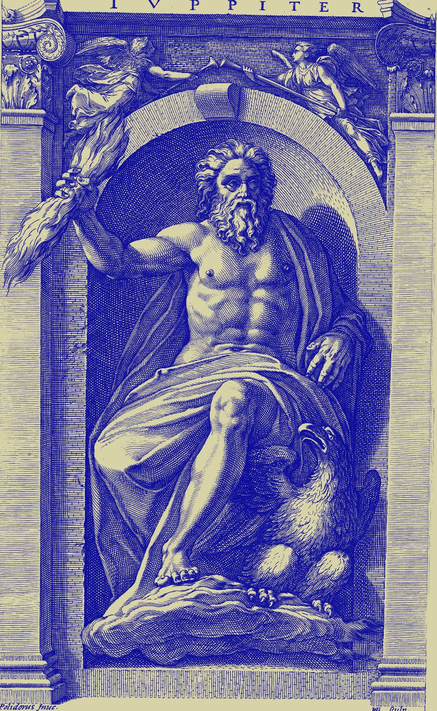
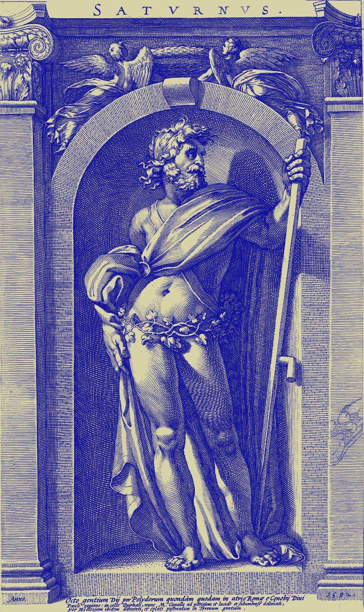

The Six Gods of
or, the Patrons of Making
Being a true account of the six tools of the CYLNDR generative suite, and of the gods who keep them. With six plates after Hendrick Goltzius.
CYLNDR · MMXXVI
Turn to the contents
Each god keeps one tool of the suite. Choose a plate to read its chapter.